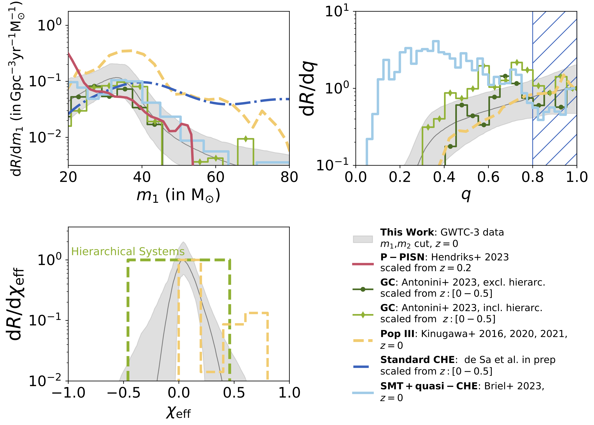

01
Where do binary black hole mergers come from?
Binary black-hole mergers offer a unique way to study the physics of massive stars and dense stellar environments at distances where these systems are otherwise difficult to observe. By measuring the masses, spins, and other properties of merging black holes, we can learn about the lives of their stellar progenitors and the environments in which the binaries formed.
A major focus of my research is understanding the origin of the excess of binary black-hole mergers near 35 solar masses and using this feature to connect gravitational-wave observations with the physics of massive stars, binary evolution, and dense stellar clusters.
